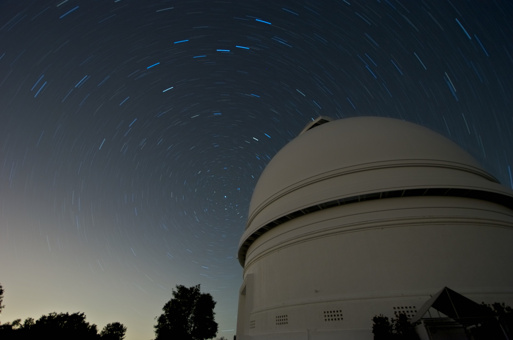

L&S 295/Astron 299: Principles of
Astronomy
Fall 2011, David Kaplan
Lectures:
MWF 10:00am-10:50am, Chemistry
170. Attendance and participation at lectures is required.
Lecturer: Prof. David Kaplan
- Office: Physics 480
- Office hours: Monday 11am-12pm, Tuesday 2pm-3pm or by appointment
- Email: kaplan@uwm.edu
- Phone: 414-229-4971
Course Description: This is a
general course intended to introduce
quantitative astronomy and astrophysics to students with a
physical-sciences background. A background in calculus-based
physics is required. This semester introduces basic concepts in
astronomy and astrophysics including:
- Celestial mechanics
- The nature of light and its interaction with matter
- Telescopes
- The structure and evolution of single stars
- The evolution of binary stars
- The end-products of stellar evolution
- The Solar System
- Extra-solar planets
- Galaxies & quasars
- Expansion of the universe & dark matter
- The big bang
Course Website: http://www.gravity.phys.uwm.edu/~kaplan/astron299.html
Lecture notes, reading assignments, and problem sets will be posted
there.
Course Textbook:
Astronomy: A Physical Perspective (2nd edition), M. Kutner, Cambridge
University Press
Evaluation:
- Problem sets (weekly): 50%; grade will be best 10 of 11 problem
sets
- Midterm exam: 20%
- Final exam: 30%
- You are encouraged to discuss the problem sets with each other
but are
not allowed to copy each other.
- The mid-term will be an in-class,
open-book exam of 1 hour duration.
- The final exam will be a closed-book exam of 2 hours duration
(only
calculator allowed).
Prerequisites: basic physics
(algebra-based). Students should have completed Physics 120 (or
209), or have consent of the instructor. Math placement level B
is required; knowledge of algebra, basic geometry, and basic
trigonometry is assumed.
News:
- Monday, Sep 12 will be a planetarium lecture. Meet outside
(across from Physics 137) at or slightly before 10am. If you are late, you will be
locked out!
Handouts:
- Syllabus (Sep 7,
2011)
- Problem Set 1 (Sep 7
2011, due Sep 14 2011)
- Palomar
star-trail image (click for a larger image)

- Solution Set 1 (Sep 14 2011)
- Problem Set 2 (Sep 14
2011, due Sep 21 2011)
- Solution Set 2 (Sep 23 2011)
- Problem Set 3 (Sep 23
2011, due Oct 5 2011)
- Lectures 1 to 12
- Problem Set 4 (Oct 5
2011, due Oct 12 2011)
- Lectures 1 to 21
- Problem Set 5 (Oct 12
2011, due Oct 19 2011)
- Star Formation Notes (Oct 12
2011)
- Problem Set 6 (Nov 2
2011, due Nov 9 2011)
- Problem Set 7 (Nov 9
2011, due Nov 16 2011)
- Problem Set 8 (Nov 16
2011, due Nov 30 2011)
- Problem Set 9 (Nov 30
2011, due Dec 7 2011)
- Lectures 1 to 52
- Information on Extra-Credit Paper